SMART-MARKETSCOPE-MACRO-REGIME-NAS100-001
Insufficient aligned trades
Candidate: NONE · T0: 306 fills, -173.457870R medium cost · Macro variants: 0 retained fills
Evidence labels
- FACT: immutable Role 6–9 counts and hashes.
- CALCULATION: chart-only aggregation of frozen rows.
- ASSUMPTION: none added to research logic.
- INTERPRETATION: inactivity cannot rescue a negative strategy.
Open the self-contained interactive category explorer.
Charts A–K
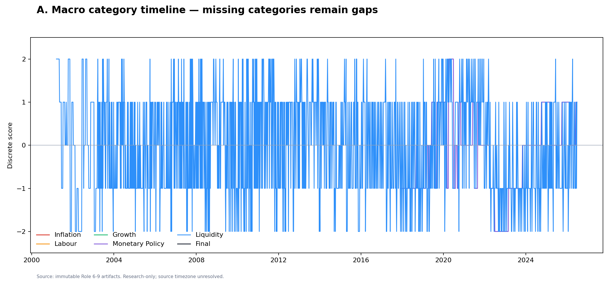
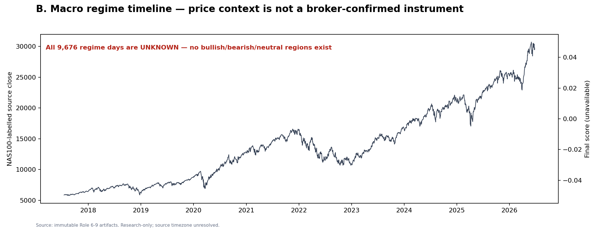
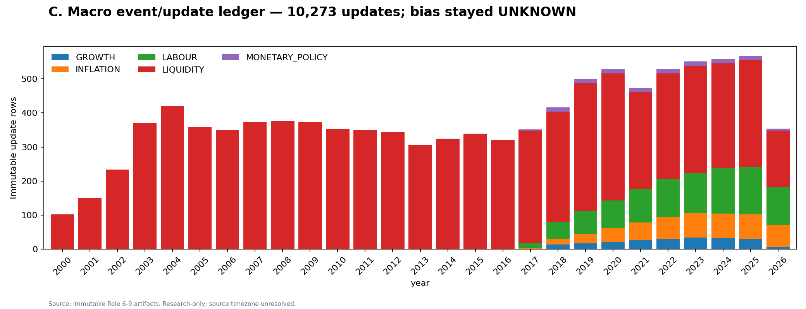
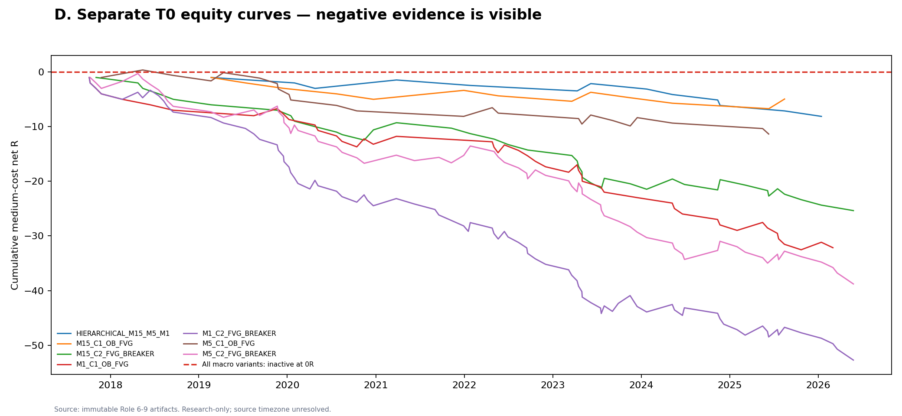
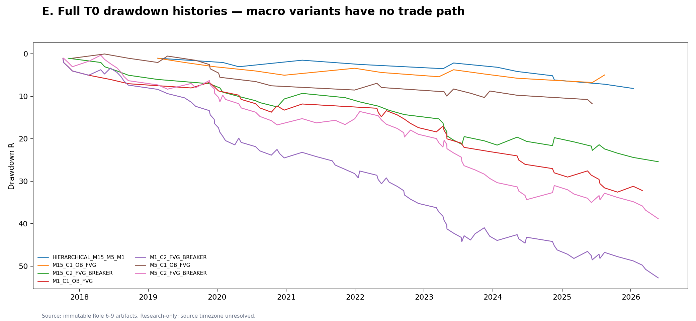
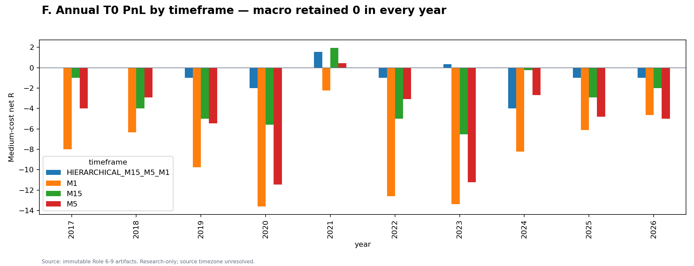
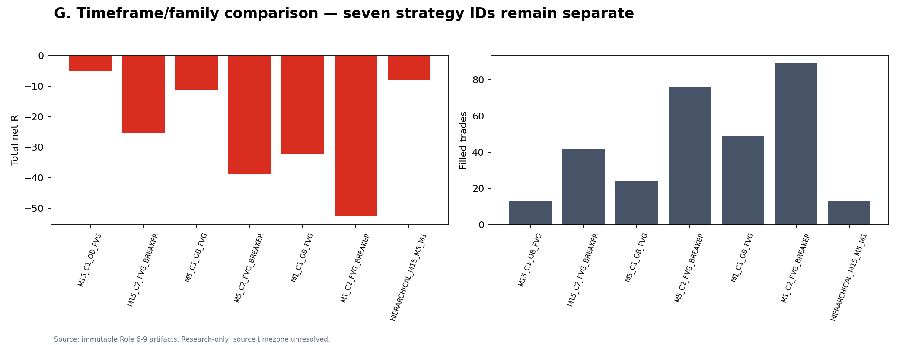
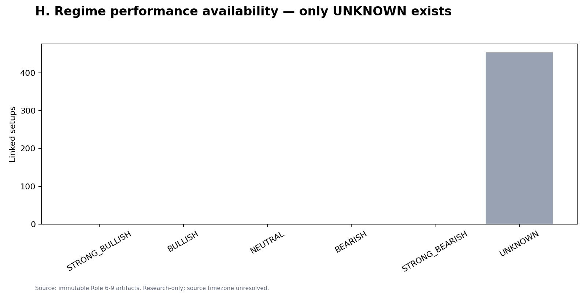
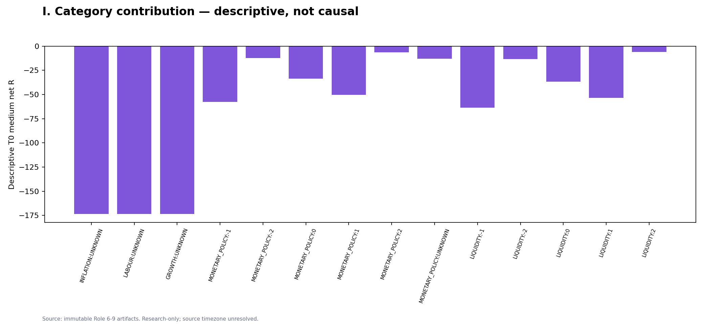
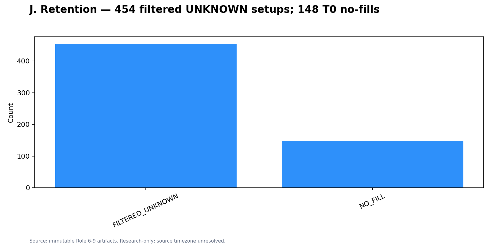
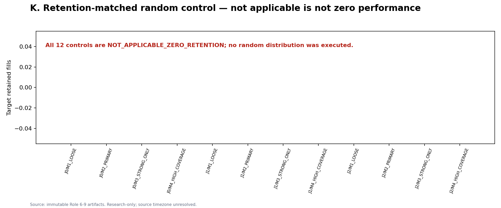
Local evidence
Metrics · Event ledger · Walk-forward · Manifest
No external fetches, collector URL, credential, order control, broker path, or mutation action is present.